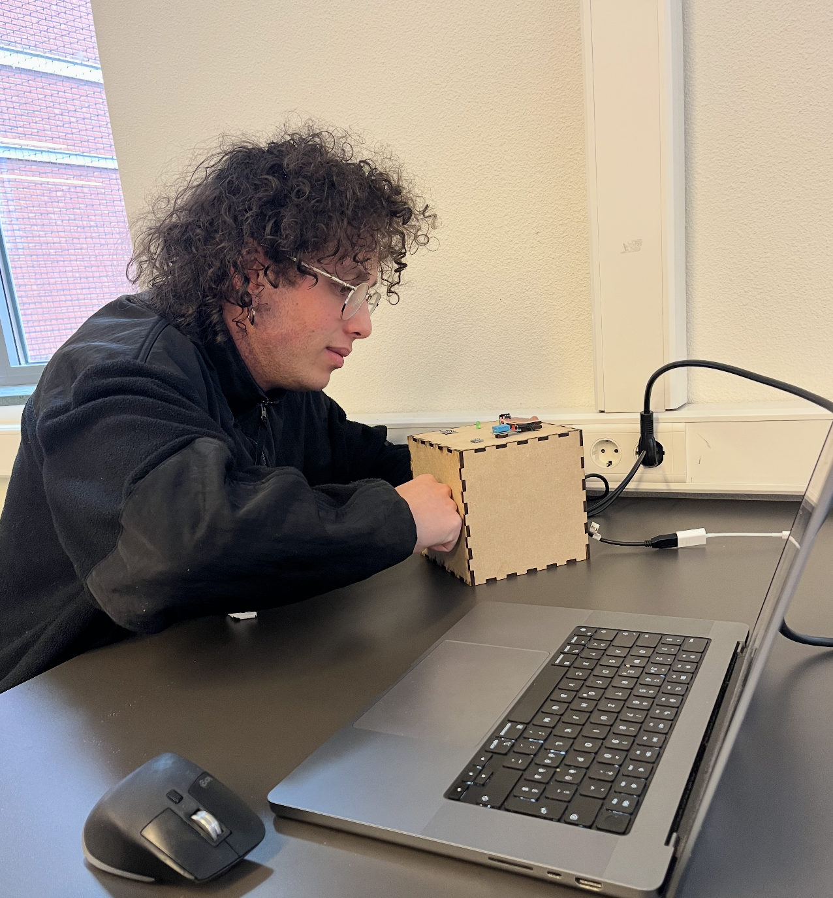
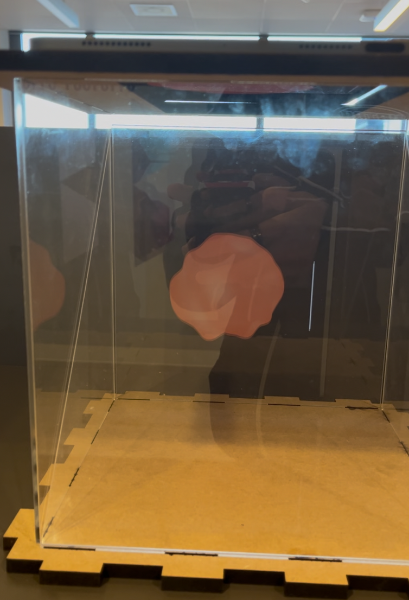

Create & Test
DIGITAL MANUFACTURING
Device(s) and Material
The device and materials were selected based on the available tools at the MakersLab at HVA. Tried to be as cost-effective as possible while still using good materials to match the needs of the product.
Device
Laser Cutter
Used for cutting all components (MDF and acrylic). Which is quiet precise and easy to use and also doesn't take long time if something might go wrong.
Reference: MakersLab Resources
Refer to the following sites for the laser cutter at HVA:
Material
MDF (Medium-Density Fiberboard)
-
9mm MDF
-
Quantity: 1 sheet
- Size: 1220 mm × 610 mm × 9 mm
- Use: Main installation cube
-
Reasoning: Strong and affordable.
-
4mm MDF
- Quantity: 1 sheet
- Size: 500 mm × 350 mm × 4 mm
- Use: Reader cube and smaller support elements
- Reasoning: Lightweight and affordable.
Acrylic (Plexiglas)
- 3mm Acrylic
- Quantity: 1 sheet
- Size: 600 mm × 1200 mm × 3 mm
- Use: Transparent parts for Pepper's Ghost cube
- Reasoning: Provides best optical clarity.
Justification
These materials are accessible and effective for the structural and aesthetic needs.
Manufacturing Settings
The following predefined settings were used from the laser cutter at the HVA MakersLab.
Acrylic 3mm Cutout
- Speed: 15 mm/s
- Power: 70%
- Min Power: 70%
- Passes: 1
MDF 4mm Cutout
- Speed: 30 mm/s
- Power: 65%
- Min Power: 60%
- Passes: 1
MDF 9mm Cutout
- Speed: 12 mm/s
- Power: 80%
- Min Power: 75%
- Passes: 1
Optimisations
- Paths were merged to one file to reduce laser time.
- Nesting of parts for minimal waste.
- Labels and unnecessary paths removed from SVG files.
Process
Laser Cut Material
1. Laser Cut 9mm MDF for Installation
- Place the 9mm MDF plate on the laser bed
- Open the laser cutting software and import the SVG file: (2024-04-04_installation_mdf_9mm.svg)
- Asign 9mm MDF Settings to the cutout
- Send the file to the machine and load it
- Calibrate the laser focus manually
- Set the origin point and use the framing function to verify alignment
- Recalibrate if needed, then start the cutting process
{kind=link}
2. Laser Cut 4mm MDF for Sensor Reader
- Place the 4mm MDF plate on the laser bed
- Open the laser cutting software and import the SVG file: (2024-04-04_installation_mdf_9mm.svg)
- Asign 9mm MDF Settings to the cutout
- Send the file to the machine and load it
- Calibrate the laser focus manually
- Set the origin point and use the framing function to verify alignment
- Recalibrate if needed, then start the cutting process
{kind=link}
3. Laser Cut 3mm Acrylic for Installation
- Place the 3mm Acrylic plate on the laser bed
- Open the laser cutting software and import the SVG file: (2024-04-04_installation_mdf_9mm.svg)
- Asign 9mm MDF Settings to the cutout
- Send the file to the machine and load it
- Calibrate the laser focus manually
- Set the origin point and use the framing function to verify alignment
- Recalibrate if needed, then start the cutting process
{kind=link}

4. Assemble the Boxes
- Assemble the bottom, and side panels of each cube
- important: Leave one side (left or right or top) open for internal wiring

5. Assemble the Parts
- Place the Wemos, ESP32 and their breadboard into the boxes
- Check all wire connections
- Insert the speaker into its slot
- Insert the LEDs into the Box


6. Glue Parts
- Use hot glue to fix sensors on the top of the sensor cube
- Use hot glue to fix the window from the inside to avoid gaps
- Use hot glue to fix LEDs for better alignment.
- Add support parts if needed (refer to example build)


7. Close the Boxes
- Add the USB-C Connections to the boards
- Close the Cubes

8. Assemble the top part when needed
- When the installation is needed, slide the acrylic glass into the side slots
- Add the Vertical plate into the top box, make sure it faces the correct direction (Tilted towards the back)
- Carefully place the top MDF plate onto the cube while ensuring the acrylic stays in place

9. Done :)

Files
These are the relevant design files as illustrator files for references:
- 2024-04-04_installation_acryl_3mm.ai
- 2024-04-04_sensor-reader_mdf_4mm.ai
- 2024-04-04_installation_mdf_9mm.ai
(USER)TEST
Requirements
The following requirements were choosen based on impact on design and user needs:
Real-Time Weather Visualization
Visuals, lighting, and sound must update within 5 seconds of weather changes.
Intuitive User Experience
Experience must feel natural, intuitive, and technologically innovative.
How was it tested?
An observational testing method was used with a total of 5 users.
The participants were invited to freely explore the system without a predefined task.
Their behavior and reactions were observed, notes were taken during and after the testing, with question how they feel and what struggles they had during the interaction.
No major changes were required for the physical components. Focus was placed on improving the software.
Observations
- 5 out of 5 were impressed by the visuals and described them as engaging.
- 5 out of 5 were curious about how the system works.
- 5 out of 5 mentioned that the visuals were hard to see in a bright environment.
- 4 out of 5 noticed that the update speed from the sensor to the installation felt slow or unstable.
- 4 out of 5 found the IR sensor unnecessary.
- 2 out of 5 asked what variables control the installation.
Conclusion (prioritized)
- Visuals are effective – all users found the system visually engaging.
- Visibility is limited in bright environments – the experience isn't really good in bright lights.
- Blob behavior sparks curiosity – users wanted to understand how it works.
- IR sensor caused confusion – users struggled to understand and rely on it.
- Update speed could be improved – some delay was noticed during testing.
- Lack of context – users asked what controls the visuals, indicating a need for explanation.
Optimisation
To improve the experience based on user feedback, the following optimizations were implemented:
- Added a black foam frame to block external light and improve visual contrast
- Removed the IR sensor, making the system fully autonomous
- Created a printed data sheet to explain how sensor data maps to system behavior
- Improved update speed and reliability using atomic POST requests